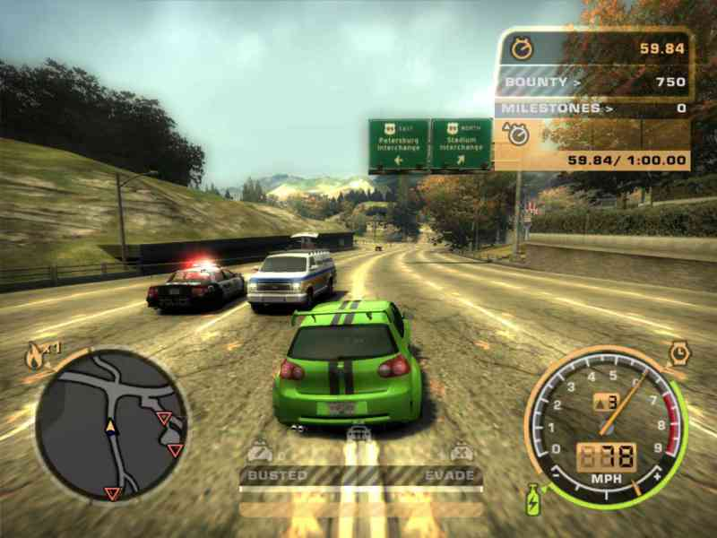
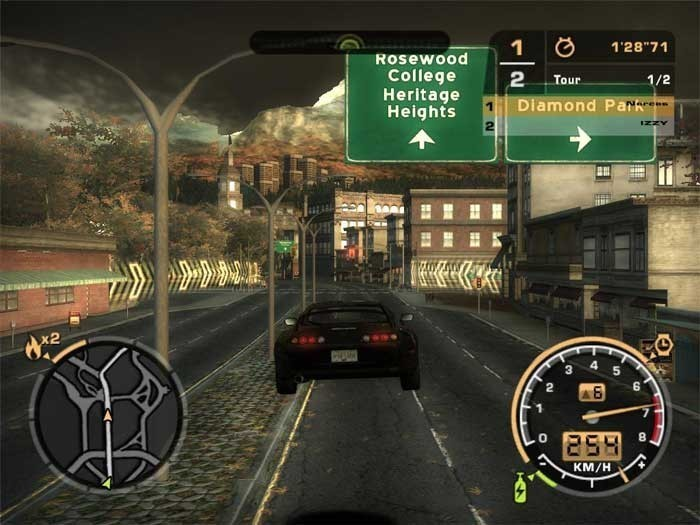
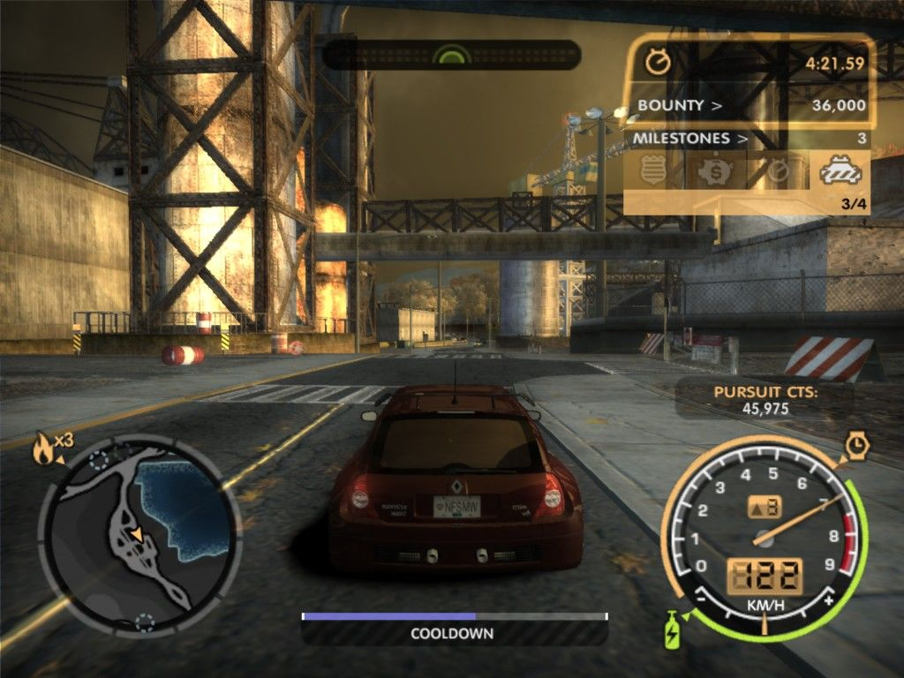

NIVELES DE PERSECUCIONES
Condición 1: En esta codición la patrulla ciudadana Ford Crown Victoria estará al mando. Son ágiles(manejo) y rápidos(aceleración), pero su velocidad maxima se retiene(dignos de ser tuners nivel 3). Son fáciles de inmovilizar y fáciles de perder,van en grupos de 5 autos patrulla y los refuerzos llegan en 3 minutos.
Condición 1: En esta codición la patrulla ciudadana Ford Crown Victoria estará al mando. Son ágiles(manejo) y rápidos(aceleración), pero su velocidad maxima se retiene(dignos de ser tuners nivel 3). Son fáciles de inmovilizar y fáciles de perder,van en grupos de 5 autos patrulla y los refuerzos llegan en 3 minutos.
Condición 2: En esta condición la Patrulla Ciudadana de Incógnitoentra en acción con el mismo modelo de auto que los policias de Condición 1, pero estos son de pintura totalmente negra azulada y las sirenas las tendran dentro del auto patrulla, similares a los autos que utiliza el FBI. Esta vez no son tan fáciles de inmovilizar y alcanzaran altas velocidades. Los bloqueos aparecerán también, pero muy pocas veces. Van en grupos máximo de 10 autos patrulla y los refuerzos también tardan 3 minutos en llegar.
Condición 2: En esta condición la Patrulla Ciudadana de Incógnitoentra en acción con el mismo modelo de auto que los policias de Condición 1, pero estos son de pintura totalmente negra azulada y las sirenas las tendran dentro del auto patrulla, similares a los autos que utiliza el FBI. Esta vez no son tan fáciles de inmovilizar y alcanzaran altas velocidades. Los bloqueos aparecerán también, pero muy pocas veces. Van en grupos máximo de 10 autos patrulla y los refuerzos también tardan 3 minutos en llegar.
Condición 3: La Patrulla Estatalestará al mando de la persecución. Son muscles nivel 2 Pontiac GTO(Modelo de 2004), muy rápidos y alcanzan altas velocidades, pero su manejo se retiene. Son un poco difíciles de inmovilizar. Los Rhinos (llamados así por sus embestidas comparables a la de los rinocerontes) , que son todoterrenos tambien aparecerán pero solamente para chocarte por el frente, corriendo velocidades de aproximadamente 200km/h.Los bloqueos serán más frecuentes(tanto la Patrulla Estatal com de R hinos). Van en grupos máximo 15 autos patrulla y los refuerzos tardan 2 minutos 30 segundos en llegar.
Condición 3: La Patrulla Estatalestará al mando de la persecución. Son muscles nivel 2 Pontiac GTO(Modelo de 2004), muy rápidos y alcanzan altas velocidades, pero su manejo se retiene. Son un poco difíciles de inmovilizar. Los Rhinos (llamados así por sus embestidas comparables a la de los rinocerontes) , que son todoterrenos tambien aparecerán pero solamente para chocarte por el frente, corriendo velocidades de aproximadamente 200km/h.Los bloqueos serán más frecuentes(tanto la Patrulla Estatal com de R hinos). Van en grupos máximo 15 autos patrulla y los refuerzos tardan 2 minutos 30 segundos en llegar.
Condición 4: La Patrulla Estatal de Incógnito entra en acción. Son el mismo modelo de autos que los policías de Condoción 3 y de la misma forma en cuando a pintura y sirenas que los pilicías de Condición 2 , pero aún mas rápidos y más potentes, alcanzando los 300km/h. Aparece una nueva formación de bloqueos, esta vez con Bandas de Clavos(si el jugador pasa por encima de una, perderá sus llantas y, por lo tanto, la persecución terminará de , una sola forma) y estarán aconpañadas tanto de las Patrulla Estatal de Incógnito como los Rhinos(los Rhinos son más pesados que en la COndición 3). Van en grupo de máximo 20 coches patrulla y los refuerzos también tardan 2 minutos 30 segundos en llegar, cabe destacar que a partir de esta condición aparecerá el Helicóptero de la policía para ayudar en la persecución, indicando a dónde se diríge el jugador.
Condición 5: Si se llega ea esta condición la Patrulla Federal estará al mando. Son muscles nivel 3, Police Chevrolet C6 de color blanco; son demaciados rápidos ya que estarán equipados con nitroso y supercargador. Son muy difíciles de inmovilizar y los bloqueos serán aún más frecuentes, al igual que las Bandas de Clavos. Los Rhinos apareceran por el frente para chocarte y son aun más pesados que en las otras dos condiciones, e inclusive aparecerá el helicóptero de la policía, solo que a diferencia de la condición anterior en la cual solo permanece en el aire, en esta ocasión este puede descender y embestir el auto(solo si esta en campo abierto: un ejemplo la carretera). Muy rara vez aparecerá el sargento Cross para dirigir la persecución, el auto de Cross (Chevrolet Corvette C6) es un poco ágil y potente ya que solo va a contar con supercargador y siempre mantendrá su cierta distancia con el jugador. Van en grupos de máximo 25 autos patrulla y los refuerzos tardaran 1 minuto 30 segundos en llegar.
Condición 6: Únicamente disponible en la persecución final y son la Patrulla Federal de Incógnito. El jugador será perseguido por los Chevrolet Corvette C6 de incógnito. En esta condición los autos son mucho más rápidos y también intentarán adelantar al jugador para bloquear su camino, Brian usara el BMW M3 GTR E46 (que inicialmente era de él)que le gano Razor al principio del juego, antes de escapar, la única forma de perderlos es saltar por un viejo puente, para escapar de la persecución, aparecerán bloqueos y van a ser muy seguidos, Bandas de Clavos y Rhinos más pesados que también participaran de la persecución y el helicóptero aparecerá para ayudar y también para embestir el auto, son mucho más difíciles de inmovilizar y aparecerá el sargento Cross con su Chevrolet Corvette C6 para dirigir la persecución. Van en grupos de máximo 30 autos patrulla y los refuerzos solamente tardan 45 segundos en llegar.
Condición 7: Únicamente Disponible en el ultimo Challenge, esta se encuentra en el " Need For Speed Most Wanted : Black Edition " Este Challenge esta ya desbloqueado no importa si no te has pasado el primero de "60"
Este es el Inicio del videojuego donde el jugador se enfrenta a Razor.Después a Ronnie. Luego a Bull.
Después Rog enfrenta a el jugador con otros 2 corredores en una carrera circuito.